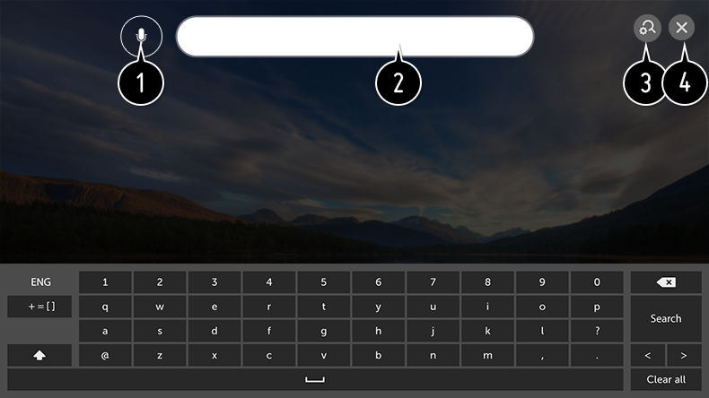

Búsqueda
Búsqueda le permite buscar y utilizar un contenido diverso.
Puede buscar archivos de imagen, vídeo y música.
Puede buscar archivos de imagen, vídeo y música.
-
Pulse el botón
 del mando a distancia.
del mando a distancia.
- Se inicia .
- Busque contenido e información utilizando los términos de búsqueda que desee.

-
Puede introducir términos de búsqueda mediante la voz.
Para ver los detalles, Cómo utilizar la TV Voz a texto en Guía del usuario. - Introduzca un término de búsqueda.
- Cambie los ajustes de las funciones proporcionadas por Búsqueda.
- Salga de Búsqueda.
Puede buscar contenido pulsando el botón  .
.
.
Algunas aplicaciones proporcionan una función que permite buscar dentro de la TV. Si ejecuta una búsqueda en dichas aplicaciones, la búsqueda se llevará a cabo en Búsqueda.
Los resultados de la búsqueda pueden variar en función del canal, la región, el idioma, los ajustes de red y si ha aceptado los términos y condiciones.